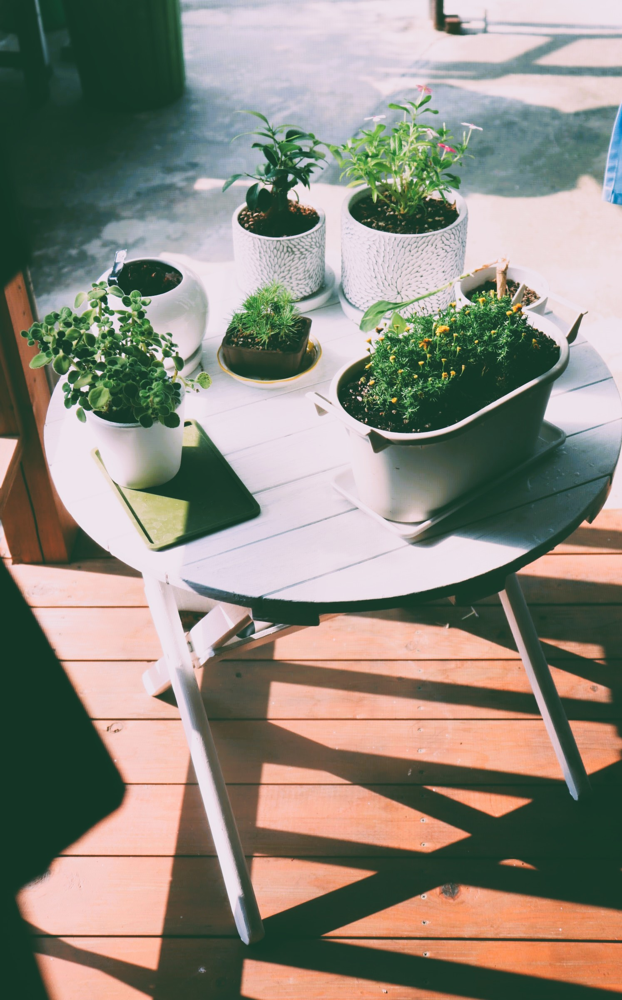

01
旅
日本各地を訪れて、食事や文化を体験するのが大好きです。 地酒と地域の魅力に惹かれます。
Welcome
小さな発見を大切にしながら、好きなことを形にしていく。
すべてを大きく変えなくても、日々の積み重ねを丁寧に続けることに価値があると信じています。 その姿勢を大切にしながら、HTMLとCSSを学び、自分の世界を少しずつ整えていっています。
About Me
About
職業：フリーター / Location：愛媛県 / Work：FXトレード、Web制作、データ入力、LINEスタンプ
はじめまして。Marieetty（マリエッティ）です。
実家を間借りして生活しながら、昼間は在宅ワーカー、夜はFXトレードをして生活しています。
LINEスタンプを作っており、販売もしております。
（※LINEスタンプショップの検索：マリエッティで出てきます。(c)marieetty ）
FXで培った感覚をもとに、Notionでトレードノートや家計簿テンプレートを作っております。
（※こちらはまだ販売はしておりません。）
数学が好きで、数式で考え方を整理するのが得意です。
学生の頃から「将来はパソコンを使う仕事がしたい」と考え、現在もパソコンに関わる仕事をしています。
子育てをしながら、パートタイムでAutoCADを使ったデータ入力業務に携わる中で、
パソコンについてもっと深く学びたいと思うようになりました。今は子どもにも手がかからなくなり、
自分の学びに時間を使えるようになっています。2024年にはC言語やHTML・CSS、アプリ開発を学び、
現在はWeb制作に取り組んでいます。
また、2022年からFXトレードを始めました。きっかけは、
「なぜ通貨の価値は上がったり下がったりするのだろう？」
「お金の仕組みはどうなっているのだろう？」という疑問でした。
東京の為替セミナーに足を運んだり、YouTubeで調べたり、
図書館で本を探したりしながら、学びを深めてきました。その中で政治や株式にも興味が広がり、
世の中の動きを理解することに楽しさを感じています。今では、毎日為替レートをチェックし
、新聞を読んで情報を得ることが習慣になっています。
日本だけでなく、世界の動きにも目を向けられるところがFXの魅力です。
利益や勝率だけにこだわらず、学ぶ楽しさを大切にしながらトレードを続けています。
新しいことを学び、少しずつできることが増えていく感覚が好きです。これからも楽しみながら、
自分のスキルや視野を広げていきたいと考えています。
ファッションやコスメ、健康にも関心があり、特に食事と運動に気を使っています。
四毒抜き(砂糖、油、小麦粉、乳製品)の食事を心がけ、日々を整えることを大切にしています。
どうぞよろしくお願いいたします。
Interests
日本各地を訪れて、食事や文化を体験するのが大好きです。 地酒と地域の魅力に惹かれます。
機器を分解して掃除することが好きで、機械の中身を知る楽しさを感じます。 組み立てたあとの達成感も最高。
内側からの美しさを重視していて、四毒抜き（砂糖、油、小麦粉、乳製品） の食事や運動を習慣にしています。日々のケアを楽しんでいます。